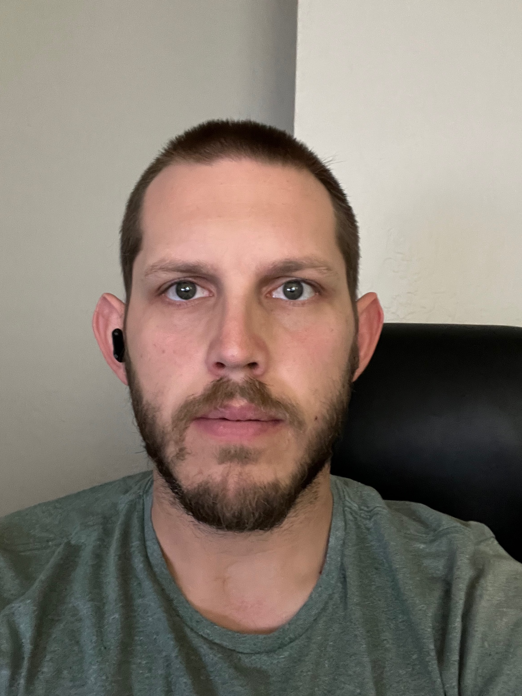

About Me
Hello, my name is Brett Burrington. I am an individual with a passion for life, a background in baseball, and a commitment to sobriety and recovery. Throughout my journey, I have experienced the transformative power of sports and the strength that comes from overcoming personal challenges. Baseball has been a significant part of my life. From a young age, I developed a love for the game and dedicated countless hours honing my skills on the field. Playing baseball taught me the value of teamwork, discipline, and perseverance. It instilled in me a strong work ethic and a drive to always give my best effort. In addition to my athletic pursuits, I have also faced and conquered personal struggles related to addiction. I am proud to say that I am now in a state of sobriety and actively engaged in the practice of recovery. This journey has taught me the importance of self-reflection, self-care, and the support of a strong community. I have discovered the power of resilience and the ability to overcome adversity with determination and a positive mindset. Today, I embrace a balanced and fulfilling life. I am committed to maintaining my sobriety and serving as a beacon of hope for others facing similar challenges. Through sharing my story and offering support, I aim to inspire and encourage individuals on their own paths to recovery. Outside of baseball and recovery, I enjoy spending time with loved ones, exploring new hobbies, and giving back to my community. I believe in the importance of continuous personal growth and finding joy in life's simple pleasures. Overall, my journey as a baseball player, a person in recovery, and an advocate for self-improvement has shaped me into the resilient, compassionate, and determined individual I am today. I am excited about what the future holds and look forward to making a positive impact in the lives of others through my experiences and passions.
Work

Group Project to make planning tavel simple. Click this image.